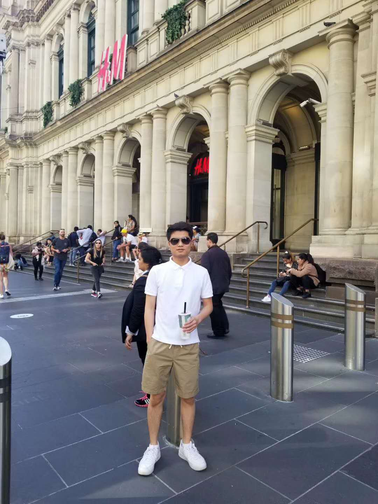

Introduction
My name is XinYu Chen, student ID is s3798356, student email is s3798356@student.rmit.edu.au . My nickname is Bruce. I come from the south of China where the climate is hotter than Melbourne, and it is also more humid. I come from China. Before coming RMIT for bachelor for IT, I had study in Chinese university for two years. Nowadays, everyone need to use internet and different application, and that is why I study in this subject—Information Technology. Before coming here, I have a little knowledge of html, java, c programming languages, and I hope to come to RMIT to learn more. I usually play pc game and exercise at a fixed time every week. I always running in park three times a week but COVD-19 break it. The difficult lockdown made my social entertainment almost all disappear
